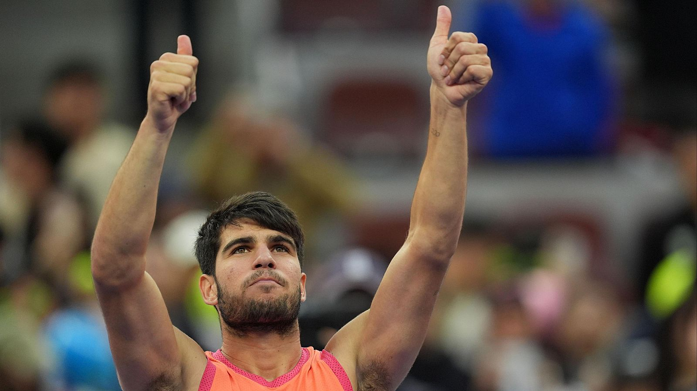

Alcaraz derriba la muralla de Medvedev para meterse en la final del Open de Pekín
El español supera al ruso por 5-7, 3-6 y se enfrentará al ganador del Sinner - Yunchaokete
El camino al nº2 del ránking para Carlos Alcaraz empezaba aquí, en el ATP 500 de Pekín que abre las puertas de su final para el español tras vencer al ruso Daniil Medvedev en semifinales.
El primer set de Alcaraz se podría resumir rápidamente en reaccionar bien en el primer juego, empezar a juguetear en el tercero, buscar la profundidad en el cuarto y romper el primer saque al ruso en el quinto.
Con el 3-2 en el marcador parecía que el español iba a desatarse pero se topó con un bien plantado Medvedev que le rompió dos veces seguidas el saque. También cedió otros dos. Tras cuatro ‘breaks’ consecutivos, fue para el murciano la oportunidad de sentenciar con el 5-6 en el marcador y el saque a su favor. Ya lo había desperdiciado en dos ocasiones pero a la tercera fue la vencida. 5-7 y un paso más cerca de la final.

Fuentes de la noticia
- RTVE
- La vanguardia
- Marca
Otras noticias de interes
- 'La Revuelta' de David Broncano reconoce errores y admite tener un plan frente a las críticas: «Hemos intentado sujetar a Grison»
- El precio del euríbor hoy, 30 de septiembre 2024: noticias muy positivas para los hipotecados
- Las 5 principales noticias de Venezuela hoy: Machado gana prestigioso premio. Confirman cargos a 2 españoles. Y más.
Glosario
- Tenis
- - Juego entre dos personas o dos parejas, en que los jugadores, a ambos lados de la red, se lanzan con raquetas una pelota con el propósito de que la otra parte no acierte a devolverla.
- Ranking
- - Clasificación de mayor a menor, útil para establecer criterios de valoración.